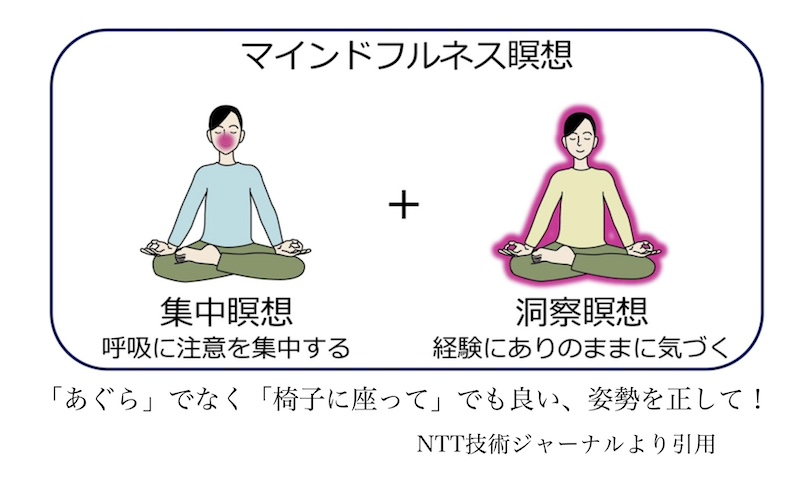

公開日：2026年3月｜最終更新：2026年7月
フレイルというと、筋力の低下など、体の問題を思い浮かべる方が多いかもしれません。しかしフレイルには、身体・心・社会の３つの側面があります。
ここでは、心の元気や人とのつながりに関わる精神・心理的フレイルと社会的フレイルについて説明します。
外出や会話が減ると、気持ちの張りがなくなり、食欲や活動量も低下します。その結果、体のフレイルも進みやすくなるという悪循環が起こります。
次の章では、それぞれの内容と、心のフレイルを防ぐ工夫についてご紹介します。
このような状態が思い浮かびます。「認知機能」、「抑うつ気分」の状態を調査してリスクを判定しますが、「心のフレイル」の状態を把握し、適切に対処することが大切です。
心の元気が失われると、身体の機能も低下しやすくなり、体力も気力も低下します。
心のフレイルを防ぐことは簡単ではありませんが、第５章で対処法のいくつかをご紹介します。
外出頻度が週１回未満で閉じこもり傾向にある場合、「社会的フレイル」が心配される状態です。
人とのつながりは、心だけでなく、食事や運動などの生活習慣にも影響します。
友人や近所の人との接触が週１回未満な状態を孤立状態ですが、孤立は、心身両面のフレイルを進める大きな要因となります。
「働くべき」、「ボランティアをすべき」、「趣味や稽古ごとに励むべき」といった画一的な回答は現実的ではないと考えられます。
高齢者の社会参加については、高齢者のニーズと実際の活動との間の「ミスマッチ」がしばしば起こるようです。
孤立や閉じこもり傾向にある高齢者は、自主的に社会参加するとは考えにくいため、公的な「コーディネーター」の役割が重要となります。
このような小さな交流の積み重ねが、心と身体の健康を守ります。
ストレスがかかった時にどんな気晴らしをすれば気分が良くなりますか？あらかじめリストアップしておけば、ストレスがかかったな、というとき、リストからピックアップして実行します。実際には
１）できるたけたくさん気晴らしをリストアップする。
２）ストレスを認識する。
３）作成したリストを持ち歩き、こまめに対処する。
４）ストレスを客観的に観察する。状況を俯瞰的に見ることも大切です。
５）ストレスと正面から向き合うことも大切な場合もある（ケースバイケースです）
「病は気から」の項で、ご紹介しましたので、そちらを参照してください。
Apple Watchのマインドフルを利用することもできます。それは、マインドフルネスを毎日の生活に取り入れることを促すアプリだそうです。
「リフレクト（毎回あるメッセージが提示され、それについて深く思索する）」と、「呼吸（息に意識を向けて集中力を高める）」の２種類のセッションが用意されています。

(3) ネガティブケイパビリティ
事実や理由を性急に求めず、不確実さや不思議さ、懐疑心の中に浸ることを意味するそうです。
自分自身が解決不可能な事象に出会った時、「拙速な答えを出したりせず」、「その宙ぶらりんの状態を観察する」、「わからないことに、わかろうとしない」など、その理由を追い求めず、不確定な状況に身をおくことを自分自身に許す姿勢が、心の健康のためには大切であるといわれています。
「身体的フレイル」については、このホームページの別の項目で解説し、それを予防するための栄養生化学的な方策をご提案しました。（高齢者のフレイル（虚弱）」と「高齢者の栄養不足」を参照ください。
テーマである「精神・心理的フレイル」や「社会的フレイル」を予防する、あるいは改善するための方策については、次のように考えられます。